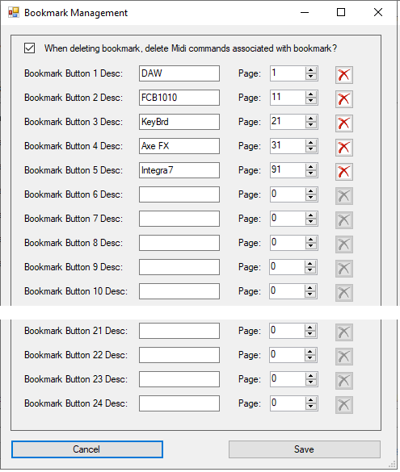
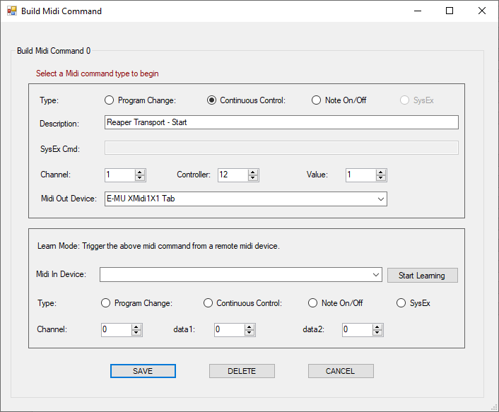
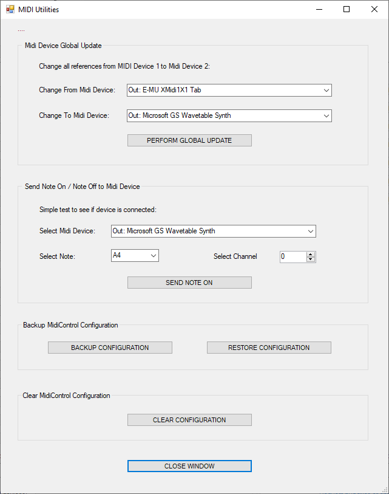
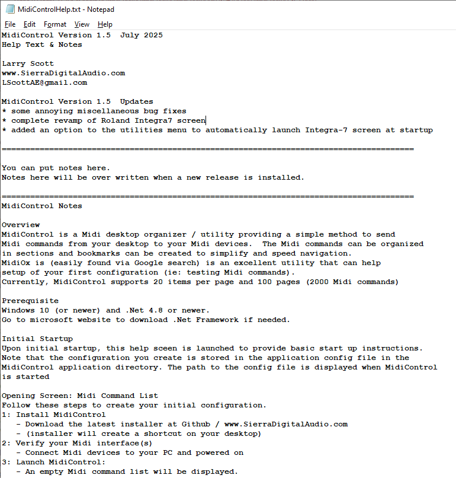
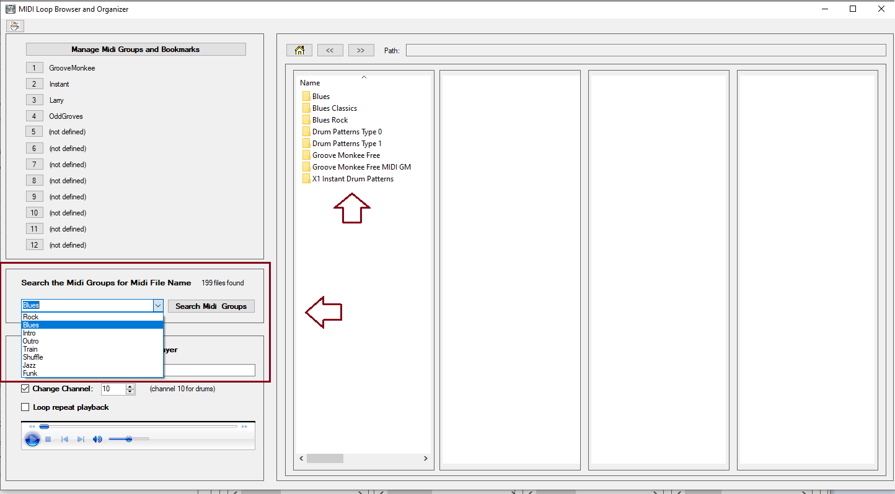
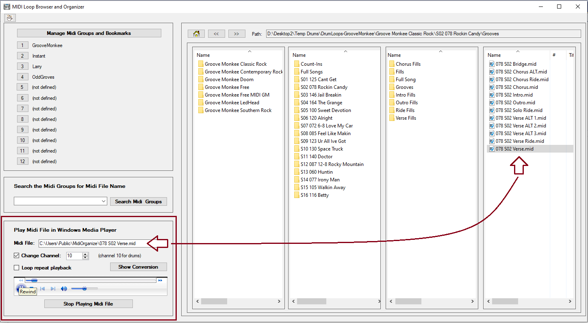
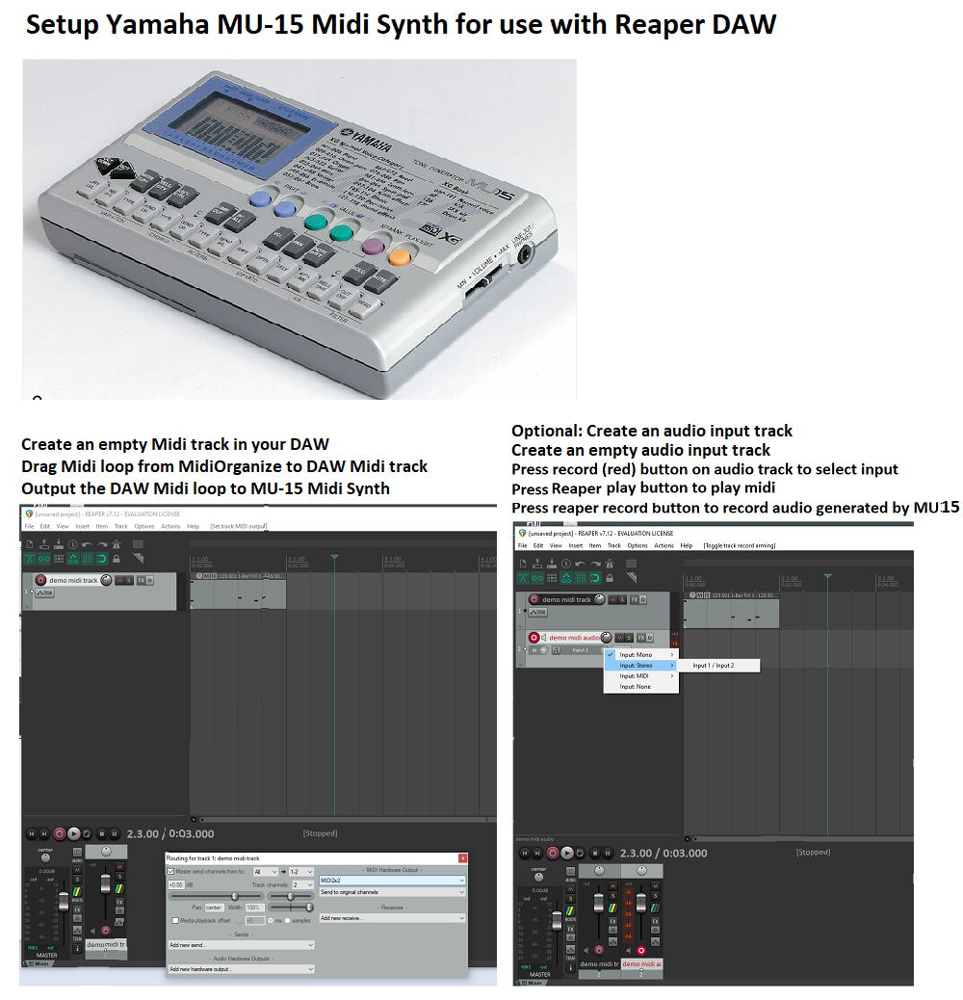
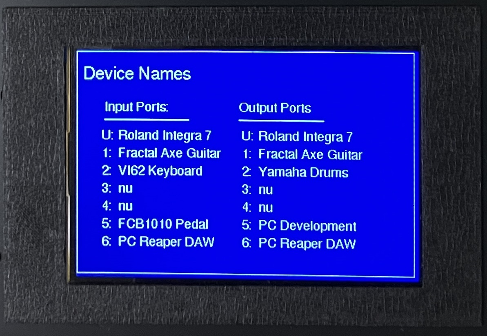

If you find something useful,
A coffee is very appreciated!
Midi System Designs
Embedded Systems Programming
Windows Device Drivers
PCB CAD and 3D Printing
Custom PC Builds
MidiControl Software with Roland Integra-7 Support (for Windows 10 and above) FREE!
Have you every wanted to control your Midi devices from your PC desktop?
or, maybe you have a Roland Integra-7 and need a simplified control panel?
MidiControl is a FREE Midi librarian used to catalog and organize Midi 'patch change' and 'control change' messages for quick access from your PC desktop, laptop, or
DAW (Digital Analog Workstation).
Use MidiControl define bookmark lists of Midi commands by Midi device, song, setlist,... giving you simple control of your Midi devices from your PC desktop. MidiControl allows you to catalog up to 2000 Midi commands.
For
Roland Integra 7 Sound Module
users, we have a particularly useful 'patch preview' feature (see button below) that allows you to easily
scroll through and preview the 6000+ Integra 7 tones. Optionally, bookmark your favorite tones in the Integra-7 list for easy access to your favorite tones.
The MidiControl Opening Screen.
(some screen options removed to fit display)
When started, the last config is loaded (shown is red)
MidiControl Speed Buttons (top left)
Bookmarks: Opens the bookmarks window.
Roland Integra7: Tone preview utility.
Midi Relay: Open the Midi relay / listener window.
Midi Utilities: Open the Midi utilities window.
Save Configuration: Saves the current configuration.
Help Text: Opens Notepad version info and help text.
Information: Displays MidiControl version info.
Buy Me A Coffee: Contributions are appreciated!
Down Arrow: Go to next page.
Up Arrow: Go to prior page.
Page Number: Jump to a specific page
MidiControl Screen Body
Status message (red): provides status info during operation.
Bookmarks: bookmarks appear as tabs across top of page.
Midi Commands: 20 bookmarked Midi commands per page.
Numbered Buttons: Press button to edit the Midi command.
Send Button: Send the bookmarked command to Midi device.
Hover Labels: Hints are provided as you hover over controls.
List Midi Devices: Midi devices current connected to PC.
This is the MidiControl Bookmark Management screen.
Use this screen to build Midi commands for buttons (1-200).
A bookmark is a page number (from 1-200) assigned by you.
Bookmarks appear across the top of the screen body.
Click on the bookmark to jump to a specific page.
Bookmark properties
Bookmark name: Give your bookmark a name.
Bookmark page: Page where Midi commands are found.
Delete button: Deletes the bookmark (not commands).

This is the MidiControl Midi Command definition screen.
Use this screen to define up to 2000 Midi commands.
You can also use this screen to 'learn' a Midi command.
Build Midi Command
Type of Midi command: Current allowed values are PC,CC,NT.
(SysEx commands will be in a future release).
Description: Provide a description of this command.
SysEx: Provide the SysEx command.
Channel (1-16), Controller (1-256), and Value (1-128).
Select the Midi device to receive the Midi command.
Learn Midi Command
Learning a Midi command 'listens' for Midi activity and displays
the Midi activity in the learn box.
The Midi input device needs to be started (put in listening mode)
on the Midi Listener (next) screen.
When MidiControl is active and a learned command is received,
the Midi command (above) is sent to the output Midi device.
Learn Midi Command Usage
Select the Midi input device to start learning.
Press the 'Start Learning' button.
Engage a note or controller on your remote Midi controller.
The remote Midi is recognized and values below are populated.
Change Midi values to suit your needs.
Press save button to save this Midi action.

Midi Listener Screen
Use this screen to start a 'listener' for a Midi device connected to your PC.
The listener must be started before MidiControl can learn a Midi command.
Multiple listeners can be started.
Some Midi devices may be locked to another running application.
Learned Midi Command Example
Midi2x2 started listening by clicking on the red led (to turn green).
Stop listening by clicking on the green led (will turn red).
The dialog box (right) shows listener started and detected activity.
Midi2x2 was started and receive a keyboard note 54, channel 0, velocity 100
Midi Utilities: Midi Global Update
The Midi Device Global Update dialog box is used to change all
MidiControl references from one Midi device to another Midi device.
For Example, assume you configured many Midi commands connected to
a Midi USB cable that is connected to your keyboard. You then change
the Midi USB cable to a USB hub. Rather than changing all your Midi
commands from the USB cable to the USB hub, come to this screen and
globally change all references from the USB cable to the USB hub
Midi Utilities: Send Note On / Off to a Midi Device
This is a simple Midi test tool to test Midi connectivity by sending
a Note On/Off command to a Midi device to see if the Midi device is
connected and operating correctly

MidiControl Release Notes and Help Text
Pressing the yellow question mark on the MidiControl home screen
displays release notes and help text.
Improved help text and release notes are a priority fo a future relase.

MidiControl Roland Integra-7 Support
The Roland Integra-7 is a tone generator with
6000+ high quality tones.Finding and previewing
the Integra-7 patches in 80 tone banks can be
challenging! MidiControl simplifies this process.
The Integra-7 tone banks are shown in the left
grid. The patches (sounds) contained in the
tone bank are shown in the right grid.
Click on the 'Play Sound Bank' button to step
through and preview ALL tones in the tone bank.
Optionally, you can press 'Play Patch' to
preview an individual tone.
Press the 'Save Patch' button if you like to
bookmark the tone to your list of 'quick access'
tones (see screen 1).
MidiOrganize Software (for Windows 10 and above) FREE!
MidiOrganize provides a FREE and simple means to organize and navigate your Midi instrument loops (drum, bass, piano,...) for
use with your DAW (Digital Analog Workstation, such as ProTools, Reaper, Cubase) mixes!
Think of MidiOrganize as a PC Midi librarian, used to catalog Midi loops by instrument, by song, by set list, or any other
criteria you require. MidiOrganize is a stand alone PC program. Once setup, simply drag and drop Midi loops from MidiOrganize
into your DAW Midi tracks. Additionally, there is a 'preview' feature in MidiOrganize to preview Midi loops inside
MidiOrganize (via Microsoft's embedded Windows Media Player plugin) before adding the Midi loop to your DAW project.
The opening MidiOrganize screen (example).
Bookmarks to Midi files (drum loops) are shown in upper left corner.
Drill down into Midi directories (drum loops) in panes 2,3,4.
The four panes display Midi files (drum loops) in a tree type structure.
Press button 'Manage Midi Groups' to setup your directories.
When MidiOrganize is started, bookmark 1 is always displayed.
Midi files (as shown in pane 4) are drag-dropped into your DAW track.
Screen shows how a bookmark 'GrooveMonkee' is displayed at startup.
In this example, GrooveMonkee points to a GrooveMonkee root folder.
As shown in the first pane, the GrooveMonkee root folder has 7 subfolders.
Drill down into the subfolders to populate panes 2,3,4.
Pane 4 is infinitely deep. You are not limited to four directory deep.
The next screen demonstrates how to setup your directories.
The 'Manage Midi Groups and Bookmarks' screen.
Press the 'Manage Midi Groups' button to open MidiGroup window.
In the MidiGroup window, give your bookmark a name.
Use the folder browser to select a Midi root folder.
In the example, I defined four bookmarks pointing to four roots.
On the home screen, no you can navigate directly to folder root.
Close the MidiGroup window to navigate your Midi files.
Drag & drop Midi files from the four panes in your DAW Midi track.
Search the Midi groups by genre.
Search for Midi files by file name / genre.
Key the search phrase in the combobox or select from drop down.
Press Search Midi Groups button to search your Midi bookmarks.
Results of the search are displayed in the first pane.
Drill down into the panes to view files matching your search.
New genres can be added to the MidiOrganize config file.
MidiOrganize config file found in Manage Midi Groups and Bookmarks.

MidiOrganize Embedded Midi File Player.
Use Microsoft GS Wavetable Synth to preview your Midi files.
Double Click any Midi file from any of the 4 panes to launch.
Midi drums require Midi file set to Midi channel 10.
Some Midi files are not set to Midi channel 10.
Check 'Change Channel 10' to fix Midi file to channel 10.
Fix does not change the original Midi file.
Fix creates a new file shown in media player.
Show Conversion button displays Midi channel 7 updates.

Reaper DAW track setup for MU-15 drums.
Send Midi loop to MU-15 to play drum loop.
Set your DAW track to send Midi to the MU-15.
Connect your DAW to MU-15 using a PC USB to Midi cable.
Connect your MU-15 audio output to your audio input.
Create a drum audio track in your DAW next to the drum Midi track.
In the drum audio track, record from your audio interface.

MidiOrganize as a Cost and Performance Alternative to VSTs (click here)
MidiOrganize can be used to organize Midi loops for use with VSTs and/or external tone generators.
VST's are Midi 'virtual instruments' that run inside your DAW. The sound of the instrument is generated by the VST.
VST's are typically expensive, require a license, and require an internet connection at start up (to validate your VST).
The processing burden of a VST on your computer's CPU can be (and is often) severe. Many VSTs in your mix can add pops, dropouts,
and delays to your final mix. MidiOrganize is purposely not a VST.
It is a stand alone program that runs outside your DAW and can optionally be used to reduce the performance impact of various VSTs.
Consider the use case where Midi Organize is supporting high end sound modules, such as a
Roland Integra 7 SuperNatual Sound Module or the more affordable
Yamaha MU15 Tone Generator.
When your DAW plays a Midi track, dont route the Midi data to a VST, send it an external tone generator connected to your mixer.
This approach provides superior sound quality, eliminates costly VSTs, reduces the heavy VST load on your PC's CPU.
MidiOrganize follows the 'drill down' look and feel of most popular drum VSTs.
If you understand the drilldown structure of the most common drum VSTs, MidiOrganize will feel very natural.
For maximum flexibility, you can continue to build your DAW project using VSTs, but when performing or building a final mix,
you may opt to route your Midi tracks to a superior external Midi sound module such as the Roland Integra 7 SuperNatual Sound Module.
The sound quality of the Roland Integra 7 SuperNatual Sound Module is simply amazing!
To conclude, if you currently use one of the many popular Drum VSTs (which I dare not mention here), consider the expense of the
VST, the licensing of your VST, the VST internet connection required at startup, and most important, the heavy burden of the VST on your CPU
(introducing latency and popping in your final mix), you can easily see the many advantages of MidiOrganize!.
My Personal Use Case (click here)
My Windows 10 music PC is optimized with 32 gig memory, 3 x 1TB M.2 gumstick drives, Intel 7 CPU, and Reaper DAW software.
I typically start to see Reaper performance degradation after loading a bass VST, a piano VST, and (the biggest culprit) a drum VST.
VSTs have benefits and conveniences, but I prefer to limit my VST usage to optimize my Reaper performance with the added benefit
of superior instument sounds. I choose to route my Midi piano and Midi bass to a
Roland Integra 7 SuperNatual Sound Module and my Midi drums to a
Yamaha MU15 Tone Generator.
For live performances, I can use this configuration reliably on a minimally configured laptop without a licensing required internet connection!
MidiXLate Midi Router
Midi routing is the process of transmitting and receiving music data (digitally encoded music notes and control messages)
from one musical device (ex: your keyboard) to another musical device (ex: your PC recording software).
Typically, Midi communication is accomplished by connecting all Midi devices to a Midi 'hub' which 'broadcasts' ALL Midi
data received at the hub to ALL Midi devices connected to the hub. This hub approach generates excessive Midi network traffic and complicates the configuration of each Midi device.
A more strict definition of 'routing' is defining 'routing rules' that are downloaded to the router defining how Midi data
received at the router will be routed (and optionally enhanced) to one or more Midi devices.
This routing approach simplifies Midi network setup and optimizes Midi network performance by reducing Midi network traffic.
This router has an extremely fast ARM 84 MHz processor that can parse, process, and route Midi data in micro seconds.
Decernable Midi latency is detected in tens of milliseconds. Router latency is not a concern.
Router Face
The router face provides a number of realtime visual aids to
monitor, decode, and debug Midi traffic as it is being processed by the router.
Power button: Power on and off the router.
Logger button: Dump Midi data to TFT screen or TTY port.
Config button: Load router config and view config on TFT.
LEDs: Blink as Midi traffic is sent and received.
Screen: Shows config and realtime Midi activity.
Router Rear
Midi Ports: Six Midi 5 pin din input ports and six output ports.
Log Port: USB port to dump router activity to terminal emulator.
CFG Port: USB port used to receive router config from PC.
USB (not used): USB port for future use.
PGM (not used): USB port to update firmware.
PWR jack: 9V center positive power barrel connector.
SD Card: Micro SD card( MS FAT32 format) router configuration.
PC Config Screen 1: Midi Routing
The router configuration is created on the PC and
downloaded to the router via the router download
screen (not shown) and USB cable.
Provide a short description of the router config.
Provide a long description of the router config.
Label the Midi port conections (Label Ports) button.
Specify Midi Routings by clicking on LEDs to toggle.
Optional: Press button to specify Midi Translations.
Optional: Press button to specify Channel Locks.
Remember to save your router config to PC desktop!.
(multiple configurations are supported)
PC Config Screen 2: Midi Translation Summary
Midi Translations are used to change a Midi message
from one format to another. For Example: assume you
want to press a buttton (controller) on you keyboard
to send a 'patch change' command to your tone generator.
Use the translation screen to identify and capture the
Midi CC (continuous control) command and translate it
to a Midi PC (program change) cmd.
Translation Screen
Provide a short description for the translation.
Specify the incoming Midi to capture.
Specify the outgoing translated Midi to send.
256 Midi translations are permitted.
Copy, paste, and delete functions are provided.
Bulk copy, paste, and delete functions are provided.
PC Config Screen 3: Midi Translation Detail This needs updating
Midi Translations are used to change a Midi message
from one format to another. For Example: assume you
want to press a buttton (controller) on you keyboard
to send a 'patch change' command to your tone generator.
Use the translation screen to identify and capture the
Midi CC (continuous control) command and translate it
to a Midi PC (program change) cmd.
Translation Screen
Provide a short description for the translation.
Specify the incoming Midi to capture.
Specify the outgoing translated Midi to send.
256 Midi translations are permitted.
Copy, paste, and delete functions are provided.
Bulk copy, paste, and delete functions are provided.
Router Config Display Screen 1: Splash Page
The splash page is displayed for two seconds when the
router is powered on, then the router services screen
is displayed.
The splash page screen provides router firmware
version information, version date information and
a support email address.
Router Config Display Screen 2: Router Services
Press the Configure button twice (to latch and unlatch)
within two seconds to cycle through the router
configuration screens.
The fisrt parameter is the active configuration
downloaded from your PC
The left column shows:
The number of input devices configured.
The number of output devices configured.
The number of routings defined (see next screens).
The number of translation mappings defined.
The number of config errors found at download.
The right column shows services enabled.
If router routing service is enabled.
If router translation service is enabled.
If router queuing is enabled.
If router SysEx processing is enabled.
If port 5 or port 6 is 'wrapped'.
Router Config Display Screen 3: Device Names
Press the Configure button twice (to latch and unlatch)
within two seconds to cycle through the router
configuration screens.
The Device Names screen displays the names of the devices
(configured on the PC and downloaded to the router) attached
to the input ports and output ports. (n/u means not used).

Router Config Display Screen 4: Port Routings
Press the Configure button twice (to latch and unlatch)
within two seconds to cycle through the router
configuration screens.
The Port Routing screen displays the names of the input
devices vertically and output devices horizontally.
This visual graphic shows which input devices are
connected to which output devices.
In the simple port routing screen shown, I am sending all
Midi data back to their origin (useful for my router testing)
but not a very meaningful configuration.
Any input device can be 'routed' to any output device.
Green: input device is connected to output device.
Yellow: port is connected but not routed (informational).
Red: input device is connected to output device.
Magenta: port is 'wrapped' (input connected to output).
Wrapped Ports
Wrapped ports are only available on port 5 or port 6
(a router internal switch ties port 5 input to port 5 output).
For example, wrap keyboard input port 5 to tone generator
on output port 5 to remove a possibility of latency.
Router Config Display Screen 5: Port Filtering
Press the Configure button twice (to latch and unlatch)
within two seconds to cycle through the router
configuration screens.
The Port Filtering screen shows which Midi commands
are processed on which Midi input ports and output ports.
The input/output port, device, and commands processed:
N: note on / note off commands are processed (yes/no).
P: program change commands are processed (yes/no).
C: control change commands are processed (yes/no).
S: sys ex commands are processed (yes/no).
MidiXLate Additional Information Click here for a basic Midi overview.
Midi Overview MIDI (Musical Instrument Digital Interface)
is a technical standard and communication protocol that allows musical devices
(instruments, computers, recording software, pedalboards, effects processors, and more) to communicate with each other.
Midi is used to communicate music note data, music commands, and vendor specific (system exclusive) commands.
Music Note Data:, Midi can be used to record and play musical notes. For example, when you press a note on a Midi
keyboard, the note number (ie: the note pressed), the note velocity (how hard the note was played) and the keyboard 'channel'
are encoded into digital Midi data which is sent to your computer's recording (DAW) software.
Software such as Pro Tools, Reaper, Cubase, can read, record, and play back Midi data.
Playback of Midi recorded data will sound identical to the original performance.
Midi music data encoding is standardized across all music gear manufacturers.
Music Commands:Your digital piano keyboard likely has buttons, sliders, foot pedals, and wheels to adjust volume, pitch bend a note,.....
In Midi jargon, these are called 'continuous controllers', or more commonly, 'controllers'..
Controllers do not change the note being played but rather transmit information to the listening device.
For example, your keyboard may have a slider that is used to control the volume of your keyboard.
This slider does not affect the note being played, but 'controls' the volume of the note being played (by sending a Midi 'continuous
controller 7' information to your PC, amplifier, or PA system). The target device recognizes the volume controller and adjusts the
keyboard volume accordingly. Midi Continuous Controller implementation is mostly standardized across all music gear manufacturers.
Vendor Specific Commands:, Midi provides a free form Midi format called 'System Exclusive' which provides musical equipment
vendors with options to implement manufacturer specific functions in their musical equipment. For example, you may own a Roland guitar
effects processor that has hundreds of 'patches'. Each patch has many possible settings, such as reverb, chorus, delay,...
Since Roland's guitar effects processors have unique internal circuitry that does not apply across all Midi device manufacturers,
Roland implements unique SysEx commands to control their devices.
The most common SysEx commands are backup and restore commands; to backup and restore your Midi device configuration to your PC.
Click here for more MidiXLate router details.
MidiXLate router details.
The MidiXLate router is a true router, meaning every Midi packet is inspected and 'routed' to it's intended destination(s).
Routing Midi data greatly reduces Midi network traffic, eliminating a flood of extraneous Midi network data.
Excessive Midi note data and Midi 'active sensing' commands can easily increase Midi network latency, killing a Midi network's efficiency.
With Midi routing, the sending and receiving Midi devices are now much simpler to configure because the Midi data received at a Midi device
is guaranteed to be intended solely for that Midi device.
For the average home user with only a few Midi devices, a Midi router may not add much value. A Midi hub is the right option.
For a performing group (or sophisticated home studio) with a large number of Midi devices and complicated Midi network,
the MidiXLate router can be a life saver.
With MidiXLate, you have complete control of Midi port 'filtering' and command 'translation' actions.
As for MidiXLate's performance, the engine of the router is a blinding fast Atmel SAM3X8E ARM Cortex-M3 processor running at 84 MHz,
providing extremely low latency.
In addition to Midi routing, the MidiXLate router provides 'port filtering' capabilities.
For each of the six input ports and six output ports, you can specify, by port, to process or ignore,
note on/off, continuous control, progam change, and/or system exclusive commands.
The router also provides a pseudo Network Address Translation (NAT) features called 'Translation' where
Midi data can be 'translated from one Midi format (such as note data) to another Midi format (such as continuous controller).
This is extremely helpful when there is no direct path for one piece of Midi gear to control another piece of Midi gear.
Click here for a simple MidiXLate router use case.
MidiXLate router use case.
Assume you have a keyboard (with keys, sliders, knobs, switches, and drum pad) connected to the MidiXLate router on input Port 1.
Further assume you have a Yamaha MU15 drum machine connected to MidiXLate router on output Port 2.
Further assume you have a Roland Integra Synth module connected to MidiXLate router on output Port 3.
Further assume you have a Reaper Digital Analog Workstation (DAW) connected to MidiXLate router input port 4 and output port 4.
Lastly assume you have MidiOX running on a development PC connected to MidiXLate router output port 4.
Configure the MidiXLate software to send Keyboard drum pad data to Yamamha MU15 drum synth.
Next, configure the MidiXLate software to send keyboard keys to Roland Integra synth.
Next, configure the MidiXLate software to send keyboard knobs, sliders, and switches to select Roland synth patches, volume, tempo,...
Next, configure the MidiXLate software to send keyboard transport controls (start,stop, play, record) to Reaper synth.
Next, configure the MidiXLate software to send keyboard knobs, sliders, and switches to select Reaper channels, volume, tempo,...
Optionally, split your keyboard keybed into 'zones' using the MidiXLate 'Translation' feature
Optionally, configure your Reaper DAW to send recorded Midi performance data to the Yamaha drum synth and Roland Integra synth.
Lastly, start MidiOx on your development PC and monitor ALL the Midi traffic on your Midi network!
This configuration would be VERY DIFFICULT to accomplish with a Midi HUB, but moderately easy with MidiXLate!
Click here for MidiXLate router pricing and availibility.
MidiXLate pricing and availability.
MidiXLate routers are custom builds. I typically build a handful of routers each year.
If you would like to 'try before you buy', send an email to
SierraDigitalAudio@gmail.com.
I rent demo routers for $150 month (in 2024) and the customer pays for shipping (both ways).
The price of renting a router is applied to the purchase price.
If you want to purchase a new router, the purchase price is $850 (in 2024).
I hand build these routers in the mountains of northern California and the profit margin on each router is slim.
As a customer, you will receive excellent support (limited phone and unlimited email), discounts for router upgrades & accessories,
and priority for router (hardware and software) customizations.